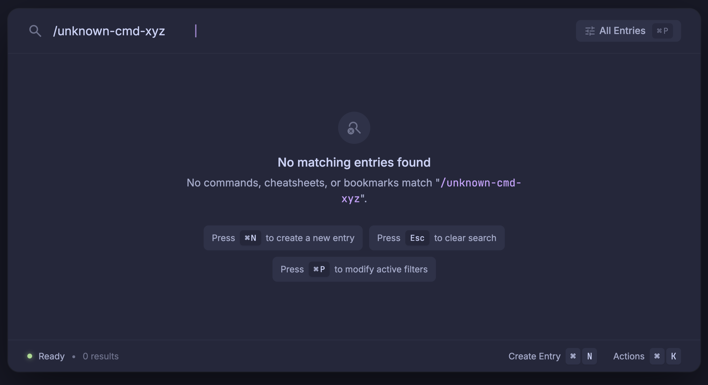

Left: switch between your design (the Stitch screen) and the proposal (the same screen built from your design's own values, with realistic data in kbx's shapes). Everything is kept as you drew it unless a note on the right says otherwise. The circled numbers point at each spot that needed a decision.

As Raycast draws it (your screenshot): one large icon, a title, one sentence; nothing else in the middle. In your design's colours, with your header and status line.
Raycast's primary here: Refresh (its Rebuild Index…). If nothing matches, a stale index is the one cause kbx can fix; clearing the query is Esc, as everywhere.
Nothing new to build: kbx's empty state is already the toolkit's Empty (title + sentence); this adds the icon and the tokens.